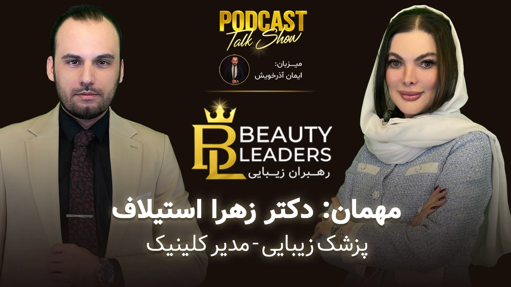

Watch on YouTubePersian language conversation ·
Where aesthetic practice meets science and poetry
Dr. Zahra Estilaf
Aesthetic physician and medical technology instructor
The published episode description introduces a physician whose professional journey connects clinical experience, teaching, invention and an interest in literature and poetry.
Explore episode